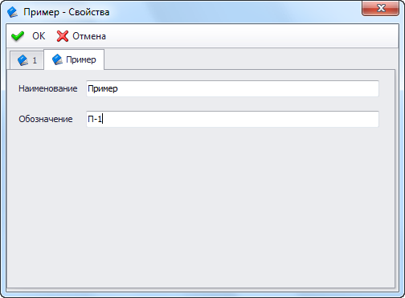

Внешняя страница диалога свойств объекта |
В T-FLEX DOCs существует возможность подключать к диалогу свойств объекта внешние пользовательские страницы. Ниже приведен пример создания такой страницы.
Страница диалога

C#
/* Дополнительные библиотеки DevExpress.Offece.v20.1.Core.dll DevExpress.Utils.v20.1.dll System.Drawing.dll System.Windows.Forms.dll TFlex.DOCs.Model.dll TFlex.DOCs.UI.Controls.dll TFlex.DOCs.UI.Objects.dll TFlex.DOCs.UI.Types.dll */ using System; using System.Windows.Forms; using TFlex.DOCs.UI.Controls.LayoutControls; using TFlex.DOCs.Model.References; using TFlex.DOCs.UI.Objects.ReferenceModel; namespace CustomPropertyDialogPage { public class MyPage : DesignLayoutPage { private TextBox _tbName; private TextBox _tbDenotation; private Label _labelName; private Label _labelDenotation; public MyPage() { InitializeComponent(); } // Возвращает или задает объект диалога свойств public ReferenceUIObject ReferenceUiObject { get; private set; } // Возвращает объект справочника, отображаемый в диалоге public ReferenceObject ReferenceObject { get { return ReferenceUiObject == null ? null : ReferenceUiObject.ReferenceObject; } } // Возвращает справочник, в который входит текущий объект public Reference Reference { get { return ReferenceObject == null ? null : ReferenceObject.Reference; } } // Возвращает или задает наименование объекта public string ObjectName { get { return _tbName.Text; } set { _tbName.Text = value; } } // Возвращает или задает обозначение объекта public string ObjectDenotation { get { return _tbDenotation.Text; } set { _tbDenotation.Text = value; } } // Инициализирует страницу диалога свойств объекта // uiObject - Объект // context - Контекст вызова диалога public override void Initialize(TFlex.DOCs.UI.Objects.IObject uiObject, TFlex.DOCs.UI.Controls.Templates.ControlActionContext context) { base.Initialize(uiObject, context); ReferenceUiObject = uiObject as ReferenceUIObject; //Получаем объект диалога SetDataToPage(); } // Вызывается при заполнении полей диалога данными объекта public override void SetDataToPage() { base.SetDataToPage(); if (ReferenceObject == null) throw new ArgumentNullException("ReferenceObject"); ObjectName = ReferenceObject.GetObjectValue("[Наименование]").ToString(); ObjectDenotation = ReferenceObject.GetObjectValue("[Обозначение]").ToString(); } // Вызывается при заполнении параметров объекта данными из диалога public override void ReadPageData() { base.ReadPageData(); if (Reference == null) throw new ArgumentNullException("Reference"); var nameParamInfo = Reference.ParameterGroup.OneToOneParameters.FindByName("Наименование"); ReferenceObject[nameParamInfo].Value = ObjectName; var denotParamInfo = Reference.ParameterGroup.OneToOneParameters.FindByName("Обозначение"); ReferenceObject[denotParamInfo].Value = ObjectDenotation; } private void InitializeComponent() { _tbName = new TextBox(); _tbDenotation = new TextBox(); _labelName = new Label(); _labelDenotation = new Label(); SuspendLayout(); // // tbName // _tbName.Anchor = AnchorStyles.Top | AnchorStyles.Left | AnchorStyles.Right; _tbName.Location = new System.Drawing.Point(98, 13); _tbName.Name = "_tbName"; _tbName.Size = new System.Drawing.Size(218, 21); _tbName.TabIndex = 0; // // tbDenotation // _tbDenotation.Anchor = AnchorStyles.Top | AnchorStyles.Left | AnchorStyles.Right; _tbDenotation.Location = new System.Drawing.Point(98, 51); _tbDenotation.Name = "_tbDenotation"; _tbDenotation.Size = new System.Drawing.Size(218, 21); _tbDenotation.TabIndex = 1; // // labelName // _labelName.AutoSize = true; _labelName.Location = new System.Drawing.Point(12, 16); _labelName.Name = "_labelName"; _labelName.Size = new System.Drawing.Size(80, 13); _labelName.TabIndex = 2; _labelName.Text = "Наименование"; // // labelDenotation // _labelDenotation.AutoSize = true; _labelDenotation.Location = new System.Drawing.Point(12, 54); _labelDenotation.Name = "_labelDenotation"; _labelDenotation.Size = new System.Drawing.Size(74, 13); _labelDenotation.TabIndex = 3; _labelDenotation.Text = "Обозначение"; // // MyPage // Controls.Add(_labelDenotation); Controls.Add(_labelName); Controls.Add(_tbDenotation); Controls.Add(_tbName); IsReadOnly = false; Name = "MyPage"; PropertiesInDesign = "ReferenceId=00000000-0000-0000-0000-000000000000;ParameterGroupGuid=00000000-0000" + "-0000-0000-000000000000;IsReadOnly=False;AutoConnect=False;"; Size = new System.Drawing.Size(335, 86); ResumeLayout(false); PerformLayout(); } } }